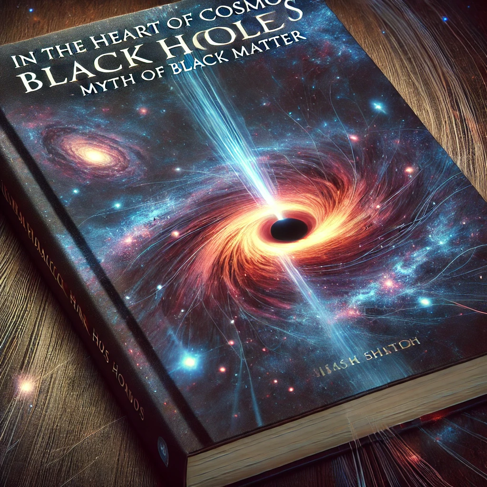

Publicado em 2025-04-09 16:18:57
🥂📚✨ In the Heart of Cosmos – Black Holes & the Myth of Dark Matter
By Francisco Gonçalves
What if everything we thought we knew about the universe... was wrong?
Forget invisible particles and mysterious energies floating around in space like cosmic seasoning. In this bold, brilliant, and slightly rebellious book, independent thinker Francisco Gonçalves asks a revolutionary question: What if the universe doesn’t need dark matter at all? What if the black holes — real, loud, and gravitation-hungry — are doing all the heavy lifting?
Step into a universe where gravitational giants shape galaxies, where doubt is a virtue, and where equations don’t get to make up imaginary friends. Part science, part philosophy, and entirely thought-provoking, this book challenges the status quo of cosmology with logic, wonder, and a dash of cosmic humor.
Whether you're a seasoned stargazer or someone who just wonders what’s really lurking in the dark, this journey will change the way you look at the universe — and quite possibly, at yourself.
Warning: May cause paradigm shifts, gravitational attraction to telescopes, and spontaneous debates at dinner parties.
Download the PDF version of the Book